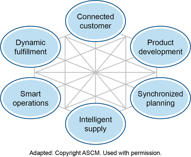

From a supply side, supply chain managers are most concerned with the sales and operations planning (Sales and Operations Planning (S&OP)) process, because it is how they ensure that supply and demand are balanced so supply chain processes can be consistent. However, it is important to place this process into its overall context, so this is presented first. After that, a master scheduling tool called the master scheduling grid is presented, including a discussion of time fences. The process can also be used for allocation of supply because a projected available balance and an available-to-promise amount can be determined.
The manufacturing planning and control process is used to plan operations. A high-level view of the process is shown in Exhibit 4-1.
The collaborative process of sales and operations planning is used to generate the production plan at the level of aggregate supply and demand. It determines production volumes for product families rather than individual products. This process reconciles the needs of demand (activities on the left side of the exhibit) with the needs of supply (the various levels of capacity checks on the right).
Master scheduling (MS) is then used to create a master production schedule (Master Production Schedule (MPS)) that will commit the company to produce specific products on particular dates. The master scheduling process, therefore, has to disaggregate the product family data into numbers of individual products based on inventory levels, forecasts, demand plans, order backlogs, orders from distribution centers (Distribution Center (DC)s) as part of distribution requirements planning (Distribution Requirements Planning (DRP)), and other considerations used to decide what you need to produce and how much of each item to produce.
From there, material requirements planning (Material Requirements Planning (MRP)) automatically calculates all of the various materials that will be needed to produce the units that are scheduled. This could then result in purchasing or drawing materials from inventory. In addition to purchasing, production execution involves production activity control, which is the detailed planning and scheduling of shop floor equipment and resources.
Each planning stage includes a capacity check:
After the collaborative process of sales and operations planning creates a unified forecast, after input from partners using Collaborative Planning, Forecasting, and Replenishment (CPFR)® or an equivalent, and after input from DRP and other actual demand sources such as direct customer orders, master scheduling (MS) creates a master production schedule that will commit the company to produce specific products on particular dates.
📖 ASCM Definition — master schedule:
While the planning so far has worked only with aggregate supply and demand for product families, the master scheduling process disaggregates the product family data into specific units of individual products. Master scheduling considers current inventory levels, forecasts, demand plans, and order backlogs to decide how much of each item to produce. Master scheduling also determines weekly production dates based on the monthly projections in the production plan.
📖 ASCM Definition — master schedule item:
...changes inside the cumulative lead time become increasingly more difficult to a point where changes should be resisted.
By providing firm production dates and numbers, the MPS serves as a contract between sales and operations. Putting numbers to the mutual obligations implied by the MPS "contract" offers benefits to both sides:
For the sales force, the MPS provides assurance that they may make delivery commitments to customers based on the amount of product that will be available week by week.
For operations, the commitment of the sales force to meet its numbers provides assurance that they can avoid problems resulting from overproduction or an excess of orders. Those problems include layoffs and unused plant capacity in the case of overproduction and the need to expand capacity rapidly and temporarily when orders exceed capacity.
💡 Key Point:
Besides disaggregating the product families, master scheduling also determines weekly production dates based on the monthly projections in the production plan. Exhibit 4-4 shows what might happen to monthly S&OP numbers for a family of laser printers when the master scheduler disaggregates the projections into weekly production numbers for specific models.
Note that the exhibit shows production numbers only, not demand projections.
Two situations could frustrate buyer-supplier relationships when actual demand data and demand plans are shared:

In this example, the organization negotiates two decision points with a supplier: a firm commitment decision point and a volume commitment decision point. The firm commitment decision point is set three weeks out, and this creates a frozen zone where the buyer commits to communicate purchase orders and makes firm requests for delivery timing on specific days. The buyer and the supplier negotiate a second decision point at 16 weeks out, a volume commitment decision point, which creates a slushy zone before the point and a liquid zone after the point. Within the slushy zone, demand that is communicated is treated as an agreement to specify weekly quantities to deliver. The buyer can rearrange priorities or change timing of orders but must buy the specified quantity of goods or services during those weeks. The liquid zone is used to communicate updates to the demand plan over whatever remains of the demand plan's planning horizon (five to 18 months in this example). Demand information communicated for these periods represents no contractual commitments for purchasing or production on the part of the buyer or the supplier.
If negotiations take this format, the subjects for negotiation will include where each decision point should be placed, based on the given industry, the supplier and buyer lead times, and the amount of flexibility or continuity each partner desires in the relationship. These negotiations should occur at the executive level with input from both organizations' supply and demand professionals. This will ensure that the plan encompasses all technical requirements for order timing while getting top support for the agreement.
This type of agreement allows the organizations to have a long-term focus and provides some amount of stability for the buyer and the supplier and perceived fairness for both parties.
Time fences for material requirements planning (MRP)—basically, planning for components or subcomponents of a production unit—work similarly to those described for master scheduling, except that each planned component will have its own set of time fences. The purpose of using time fences in MRP is to ensure that materials needed for orders are committed to those orders and not used for other purposes. The planning time fence is usually set when the material is ordered or production is begun on the component; the demand time fence is usually set when the material is received or production of the component is complete.
📖 ASCM Definition — Term:
Complex products or services often have lengthy production or rollout cycles and thus multiple time fences. For example, a ship's hull may have one set of time fences, its engines another, and the furnishings for the cabins could have another set much later in production than the first two.
Time fences can help balance the need for a production system to maintain schedules and control costs against the need for it to be flexible. Costs for changes dramatically increase when nearing the final deadline of a time horizon. Rescheduling, additional setups, rerouting, expediting, overtime, and disrupted schedules for other items can all be direct costs of late changes, not to mention the toll it takes on the perceived reliability of the master production schedule and on customer service.
However, flexibility is needed because customers can cancel orders or request changes, equipment can experience failures or other capacity problems could occur, raw materials could be used at a higher rate than expected (e.g., scrap), or suppliers could fail to deliver goods on time.
Click card to flip · Use arrows or shuffle to practise